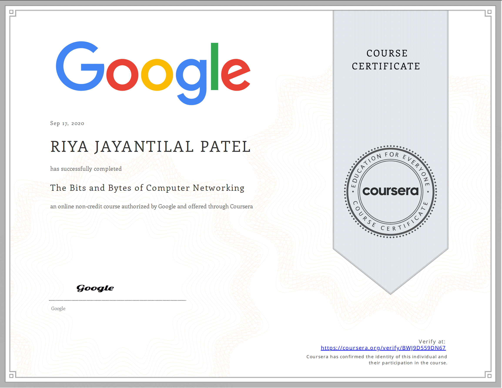
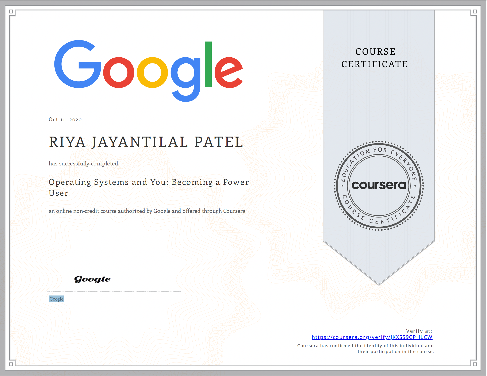

System Administration and IT Infrastructure Services
2020
This course taught how to manage and maintain reliable computer systems in multi-user and organizational environments. I learned about key infrastructure services, server configuration, cloud resource management, and tools like Active Directory and OpenLDAP. The course also covered disaster recovery strategies and best practices for choosing hardware and services.
Verify Certificate

The Bits and Bytes of Computer Networking
2020
This course provided a complete overview of modern computer networking. I learned about networking technologies, protocols, and practical troubleshooting techniques. The course also covered essential network services like DNS and DHCP, and introduced concepts in cloud computing and cloud storage.
Verify Certificate

Technical Support Fundamentals
2020
This course introduced the fundamentals of IT, including computer hardware, software, the Internet, and troubleshooting. I gained hands-on experience with assembling computers, installing operating systems, and understanding how applications and the binary system work. It also emphasized problem-solving and customer service skills in IT environments.
Verify Certificate
HTML, CSS, and Javascript for Web Developers
2022
This course focused on building modern, responsive web applications. I learned how to create clean and adaptable web pages using HTML and CSS, and how to make layouts responsive across all devices. The course also provided a solid foundation in JavaScript, enabling me to build interactive web applications and use Ajax to connect with server-side functionality.
Verify Certificate

Operating Systems and You: Becoming a Power User
2020
This course covered the core functions of operating systems, focusing on both Windows and Linux. I learned to navigate filesystems, manage users and permissions, install and configure software, and troubleshoot common system issues. The course also included hands-on experience with system processes, logs, and remote access tools.
Verify Certificate
IT Security: Defense against the digital dark arts
2020
This course taught the fundamentals of IT security, including common threats, encryption methods, and core principles like authentication, authorization, and accounting. I learned how to evaluate security risks, secure networks using tools like firewalls and Wifi encryption, and promote a culture of cybersecurity within a team.
Verify Certificate